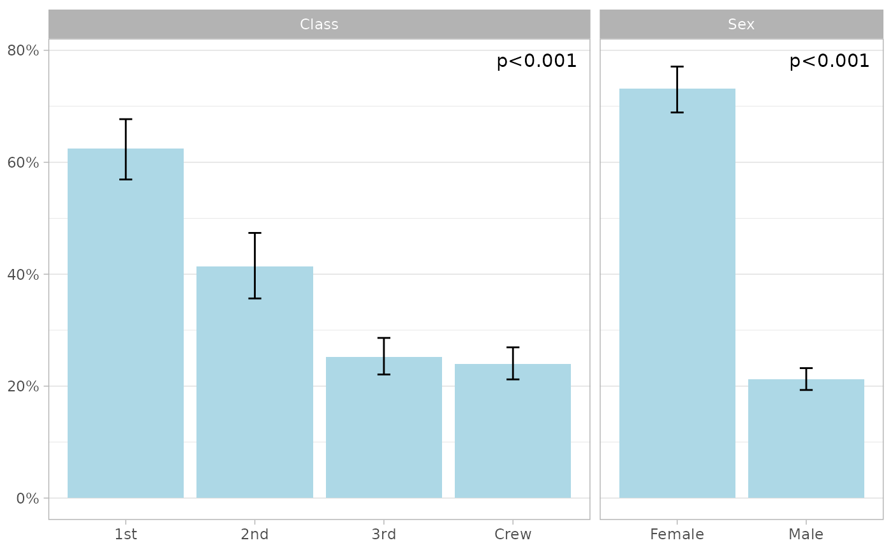
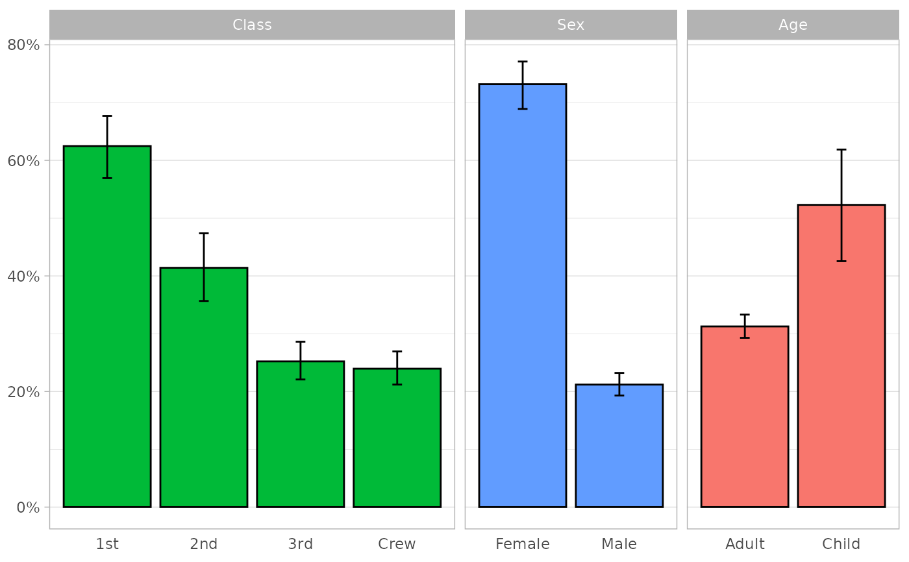

Compare a proportion by sub-groups and plot them
Source:R/compare_proportions.R
compare_proportions.Rd![[Experimental]](figures/lifecycle-experimental.svg) See
See proportion() for more details on the way proportions and confidence
intervals are computed. For data frame, Chi² p-values are computed with
stats::chisq.test(). For survey datasets, survey::svychisq() is used
instead.
Usage
compare_proportions(data, condition, by, conf.level = 0.95)
# S3 method for class 'compare_proportions'
plot(x, label_wrap = 50, add_p = TRUE, p_size = NULL, ...)Arguments
- data
A data frame, data frame extension (e.g. a tibble), or a survey design object.
- condition
<
data-masking> A condition defining a proportion (see examples).- by
<
tidy-select> List of variables to group by (comparison is done separately for each variable).- conf.level
Confidence level for the confidence intervals.
- x
A tibble returned by
compare_proportions().- label_wrap
Maximum number of characters before wrapping the strip (variable names).
- add_p
Add p-value (Chi² test) in the top-left corner.
- p_size
Text size for p-values.
- ...
Passed to
ggplot2::geom_bar()..
Examples
titanic |>
compare_proportions(Survived == "Yes", by = c(Class, Sex))
#> # A tibble: 6 × 9
#> variable variable_label level n N prop prop_low prop_high p
#> <chr> <fct> <fct> <int> <int> <dbl> <dbl> <dbl> <dbl>
#> 1 Class Class 1st 203 325 0.625 0.569 0.677 5.00e- 41
#> 2 Class Class 2nd 118 285 0.414 0.357 0.474 5.00e- 41
#> 3 Class Class 3rd 178 706 0.252 0.221 0.286 5.00e- 41
#> 4 Class Class Crew 212 885 0.240 0.212 0.269 5.00e- 41
#> 5 Sex Sex Female 344 470 0.732 0.689 0.771 7.57e-101
#> 6 Sex Sex Male 367 1731 0.212 0.193 0.232 7.57e-101
titanic |>
compare_proportions(Survived == "Yes", by = c(Class, Sex)) |>
plot(fill = "lightblue")

titanic |>
compare_proportions(Survived == "Yes", by = -Survived) |>
plot(
mapping = ggplot2::aes(fill = variable),
colour = "black",
show.legend = FALSE,
add_p = FALSE
)
